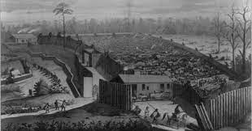
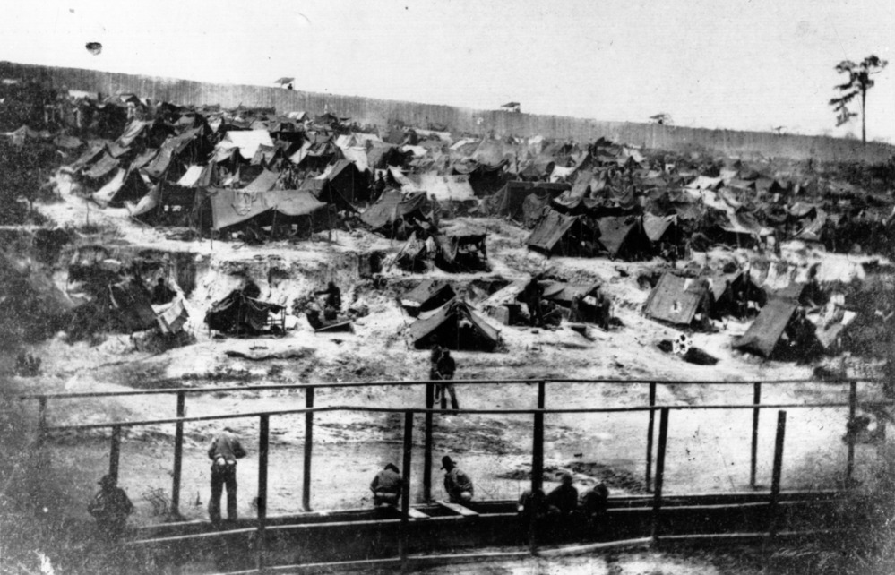
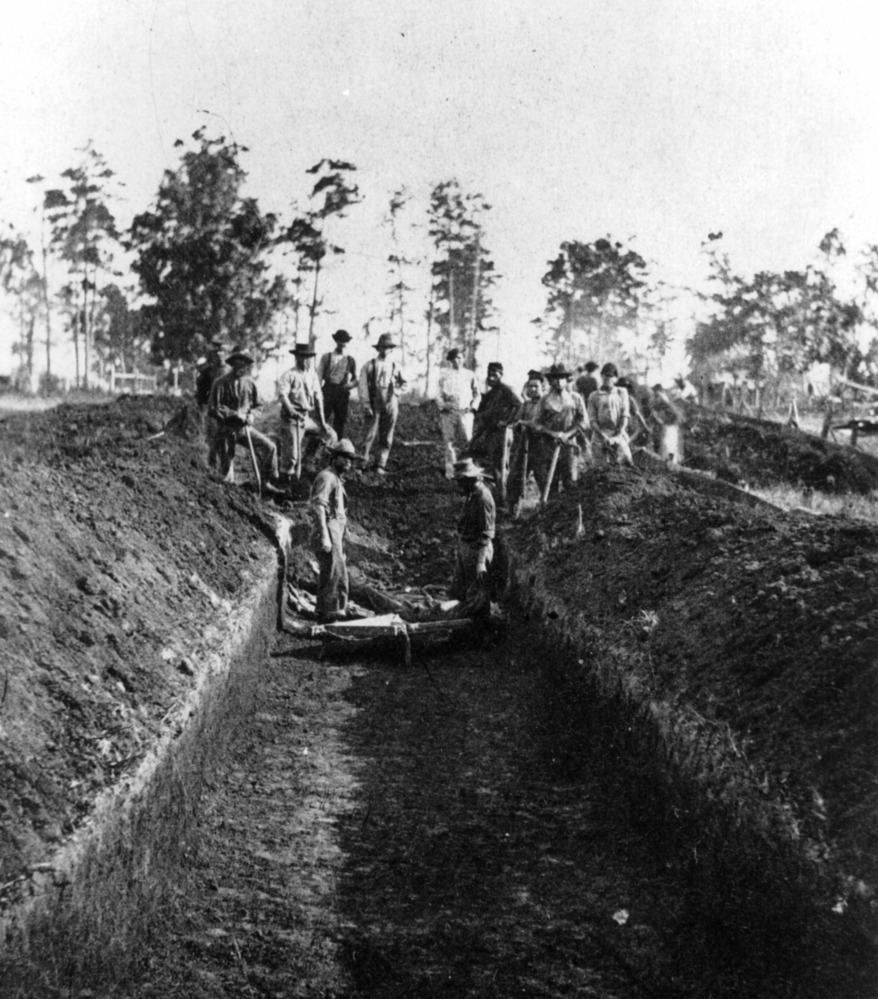
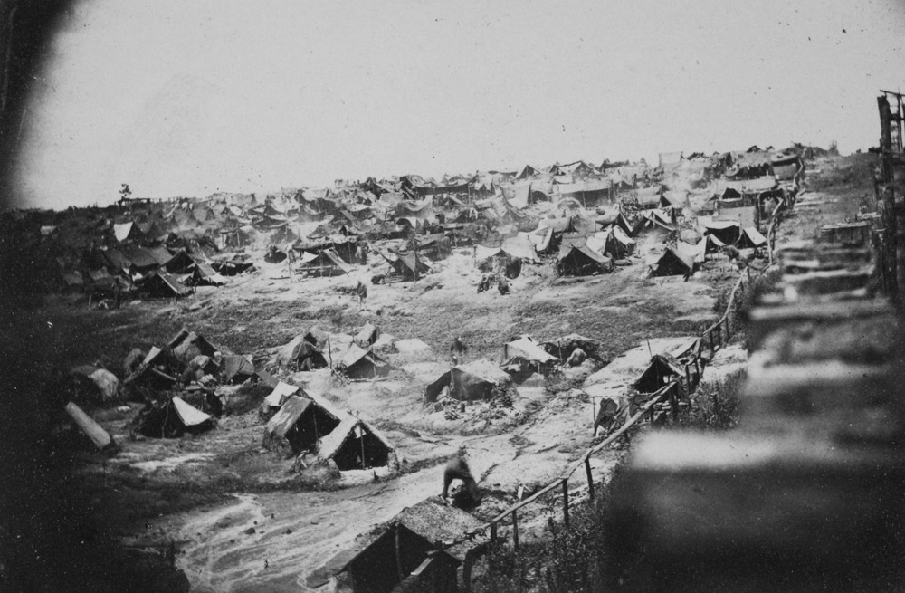
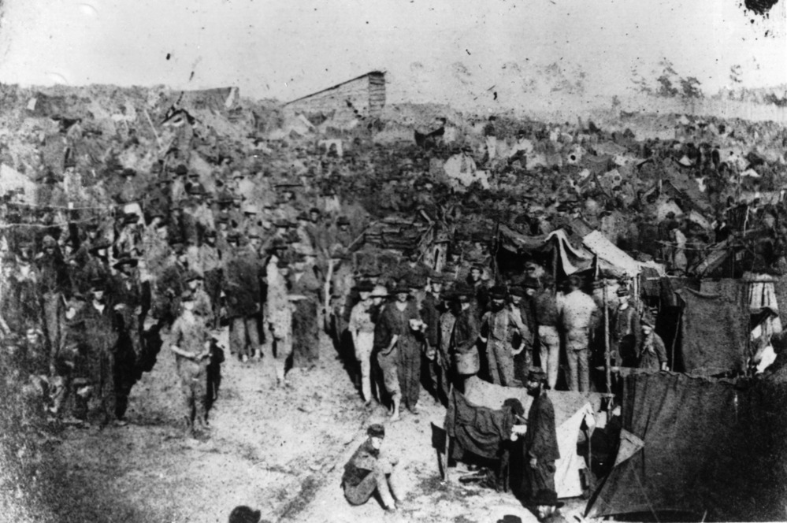
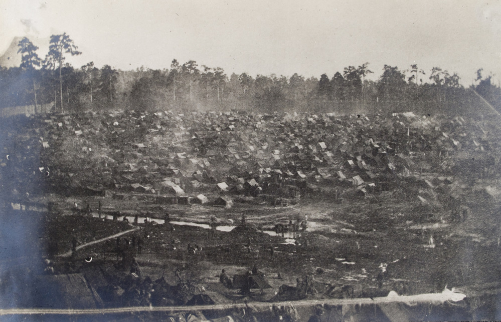

Image by History.com with minor edits ^
Scroll Down!
Facts
- Three times the intended people in a crowded area!
- You'd look like a cool skeleton from malnutrition!
- People were shot if they cross stockade lines!
- Largest confederate prison.
- Over 13,000 deaths from disease, poor sanitation, malnutrition, overcrowding, or exposure to elements.
Facts (but on the right)
- Food heavily rationed causing you to starve to death!
- Prisoners trying to get their hands on anything possible, in any way possible! Even theft and smuggling!
- Only one source of water possible! Washing stuff, drinking, bathing, all of that!
- Only used for 14 months.
- First used in late Feburary 1864.
Photo Gallery

Black and white drawing of Camp Sumter.
Prisoner after being in Andersonville.

Andersonville prison in August 1864.

Andersonville prison burial on August 1864 by the prisoners.

A photo taken from a guard tower near the east wall in August 1864.
Photo taken from the east wall of the prison.

The wagon full of rations being crowded by prisoners.

A photo taken showing the entire south end of the prison.